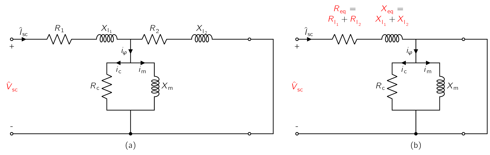
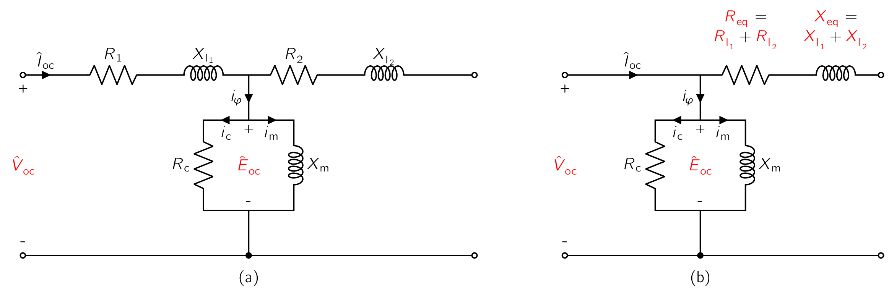

In analysis involving the transformer as a circuit element, it is useful to adopt one of several approximate forms of the equivalent circuit [40] A theoretical circuit that retains all of the electrical characteristics of a given circuit. Often, an equivalent circuit is sought that simplifies calculation, and more broadly, that is a simplest form of a more complex circuit in order to aid analysis. But then again, we’ve looked at this the previous chapter so I hope this aforementioned explanation was superfluous. of Fig. 2.10 rather than the full circuit. The approximations chosen in a particular case depend largely on physical reasoning based on orders of magnitude of the neglected quantities.
The approximate equivalent circuits commonly used for constant-frequency power transformer analyses are summarized for comparison in Fig. 2.12. All quantities in these circuits are referred to either the primary or the secondary, and the ideal transformer is NOT shown.
Calculations can often be greatly simplified by moving the shunt branch representing the exciting current out from the middle of the T-circuit to either the primary or the secondary terminals, as in Fig. 2.12a and b.
These forms of the equivalent circuit are referred to as cantilever circuits.
The series branch is the combined resistance and leakage reactance of the primary and secondary, referred to the same side. This impedance is sometimes called the equivalent series impedance () and its components are:
-
the equivalent series resistance (), and
-
equivalent series reactance (),
are shown in Fig. and b.
As compared to the equivalent-T circuit of Fig. 2.10d, the cantilever circuit introduces additional error in that it neglects the voltage drop in the primary or secondary leakage impedance caused by the exciting current. As the impedance of the exciting branch is typically quite large in large power transformers, the corresponding exciting current is quite small.
This error becomes insignificant in most situations involving large transformers.
Further analytical simplification can be achieved by neglecting the exciting current entirely, as in Fig. 2.12c, in which the transformer is represented as an equivalent series impedance. If the transformer is large, [41] In this context we would be talking about several hundred kilovoltamperes or more the equivalent resistance () becomes measurably insignificant compared to the equivalent reactance () and therefore can generally be neglected, giving the equivalent circuit of Fig. 2.12d.
For most power system problems and analysis the circuits shown in Fig. 2.12c and d are sufficiently accurate.
As a final note, in situations where the currents and voltages are determined almost wholly by the circuits external to the transformer or when a high degree of accuracy is NOT required, the entire transformer impedance can be neglected and the transformer considered to be ideal, as mentioned previously.
The circuits of Fig. 2.12 have the additional advantage being the total equivalent resistance () and equivalent reactance () can be found from a very simple test in which one terminal is short-circuited. Whereas, the process of determining the individual leakage reactances ( and ) and a complete set of parameters for the equivalent-T circuit of Fig. 2.10c is, as can be expected, more difficult.
Without some prior knowledge of the turns ratio, [42] based for example upon knowledge of the internal construction of the transformer. it is not possible to make a set of measurements which uniquely determine the turns ratio, the magnetizing inductance, and the individual leakage impedances.
It can be shown that, simply from terminal measurements, neither the turns ratio, the magnetizing reactance, or the leakage reactances are unique characteristics of a transformer equivalent circuit.
Each of the resultant equivalent circuits will have the same electrical terminal characteristics, a fact which has the fortunate consequence that any self-consistent set of empirically determined parameters will adequately represent the transformer.
There are two (2) simple tests employed to determine the parameters of the equivalent circuits of Fig. 2.10 and 2.12. These consist of measuring the input voltage, current, and power to the primary:
-
first with the secondary short-circuited, and
-
then with the secondary open-circuited,
which are looked in detail below.

The short-circuit test can be used to find the equivalent series impedance:
Although the choice of winding to short-circuit is arbitrary, for the sake of this discussion we shall consider the short circuit to be applied to the transformer secondary and voltage applied to primary.
For convenience, the high-voltage side is usually taken as the primary in this test due to the equivalent series impedance is relatively small, typically an applied primary voltage on the order of 10 to 15 percent or less of the rated value will result in rated current.
Figure 2.15a shows the equivalent circuit with transformer secondary impedance referred to the primary side and a short circuit applied to the secondary. The short-circuit impedance () looking into the primary under these conditions is:
| (2.25) |
Because the impedance of the exciting branch () is much larger than that of the secondary leakage impedance, [43] which will be true unless the core is heavily saturated by excessive voltage applied to the primary; certainly not the case here the short-circuit impedance can be approximated as
| (2.26) |
The approximation made here is equivalent to the approximation made in reducing the equivalent-T circuit to the cantilever equivalent.
This can be seen from Fig. 2.15b. The impedance seen at the input of this equivalent circuit is clearly:
given the exciting branch is directly shorted out by the short on the secondary.
Typically the instrumentation used for this test will measure the RMSRoot-Mean SquareEquivalent direct current (DC) voltage of an alternating current (AC) source. magnitude of the applied voltage (), the short-circuit current (), and the power (). Based upon these three (3) measurements, the equivalent resistance and reactance [44] Both being referred to the primary. can be found from:
The equivalent impedance can, of course, be referred from one side to the other in the usual manner. On the rare occasions when the equivalent-T circuit in Fig. 2.10d must be resorted to, approximate values of the individual primary and secondary resistances and leakage reactances can be obtained by assuming:
when all impedances are referred to the same side.
Strictly speaking, of course, it is possible to measure and directly by a DCDirect CurrentOne-directional flow of electric charge. Direct current may flow through a conductor such as a wire, but can also flow through semiconductors, insulators, or even through a vacuum as in electron or ion beams. The electric current flows in a constant direction, distinguishing it from alternating current (AC). A term formerly used for this type of current was galvanic current. resistance measurement on each winding. [45] and then referring one or the other to the other side of the idea transformer
However, no such simple test exists for the leakage reactances and .

The open-circuit test is performed with the secondary open-circuited and rated voltage impressed on the primary. Under this condition an exciting current of a few percent of full-load current [46] less on large transformers and more on smaller ones. is obtained. Rated voltage is chosen to ensure that the magnetizing reactance will be operating at a flux level close to that which will exist under normal operating conditions. If the transformer is to be used at other than its rated voltage, the test should be done at that voltage.
For convenience, the low-voltage side is usually taken as the primary in this test.
If the primary in this test is chosen to be the opposite winding from that of the short-circuit test, one must of course be careful to refer the various measured impedances to the same side of the transformer in order to obtain a self-consistent set of parameter values. Figure 2.16a shows the equivalent circuit with the transformer secondary impedance referred to the primary side and the secondary open-circuited. The open-circuit impedance looking into the primary under these conditions is
| (2.30) |
Because the impedance of the exciting branch is quite large, the voltage drop in the primary leakage impedance caused by the exciting current is typically negligible, and the primary impressed voltage very nearly equals the emf induced by the resultant core flux.
Similarly, the primary loss caused by the exciting current is negligible, so the power input very nearly equals the core loss . As a result, it is common to ignore the primary leakage impedance and to approximate the open-circuit impedance as being equal to the magnetizing impedance:
| (2.31) |
The approximation made here is equivalent to the approximation made in reducing the equivalent-T circuit to the cantilever equivalent circuit of Fig. 2.16b
The impedance seen at the input of this equivalent circuit is clearly since no current will flow in the open-circuited secondary. As with the short-circuit test, typically the instrumentation used for this test will measure the rms magnititude of the applied voltage, , the open-circuit current and the power . Neglecting the primary leakage impedance and based upon these three measurements, the magnetizing resistance and reactance [47] referred to the primary. can be found from
The values obtained are, of course, referred to the side used as the primary in this test. The open-circuit test can be used to obtain the core loss for efficiency computations and to check the magnitude of the exciting current. Sometimes the voltage at the terminals of the open-circuited secondary is measured as a check on the turns ratio.
If desired, a slightly more accurate calculation of and by retaining the measurements of and obtained from the short-circuit test, [48] referred to the proper side of the transformer. and basing the derivation on Eq. (2.30) . However, such additional effort is rarely necessary for the purposes of engineering accuracy.
-
¶
- DCDirect Current
One-directional flow of electric charge. Direct current may flow through a conductor such as a wire, but can also flow through semiconductors, insulators, or even through a vacuum as in electron or ion beams. The electric current flows in a constant direction, distinguishing it from alternating current (AC). A term formerly used for this type of current was galvanic current.
-
¶
- RMSRoot-Mean Square
Equivalent direct current (DC) voltage of an alternating current (AC) source.